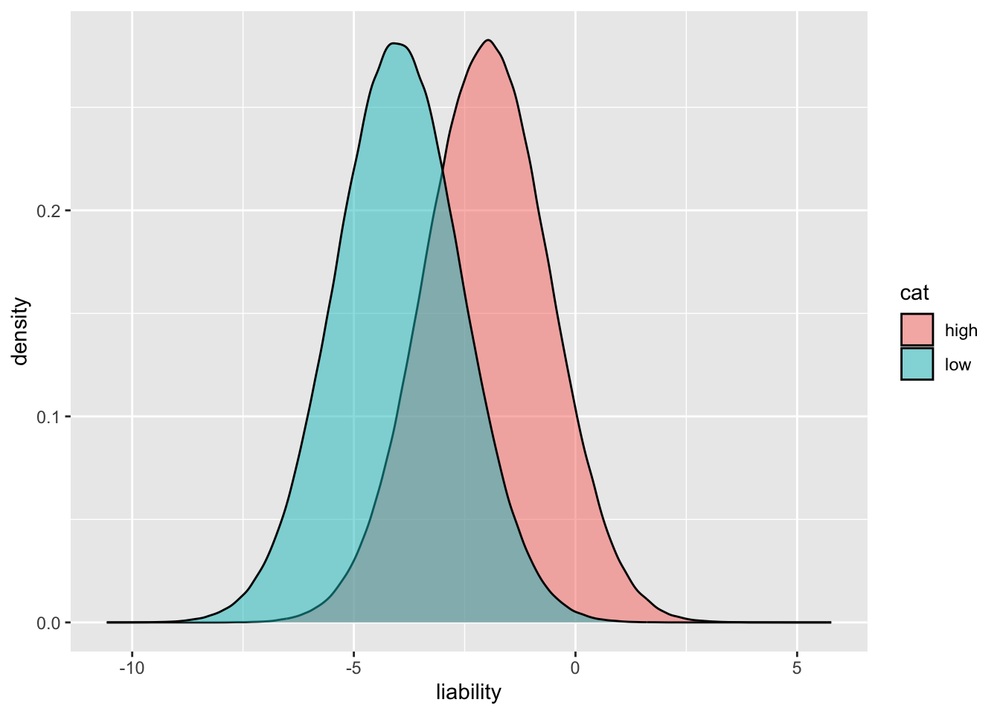

library(dplyr)
Attaching package: 'dplyr'The following objects are masked from 'package:stats':
filter, lagThe following objects are masked from 'package:base':
intersect, setdiff, setequal, unionlibrary(tidyr)
library(ggplot2)Gibran Hemani
February 21, 2024
Richard Peto points out, and later George Davey Smith, that cancer prevalence is very different across geographical regions and across time periods within geographical regions. Such systematic differences are too rapid to be explained by genetic factors, and too structured to be explained by chance. When comparing the rates of cancer between the highest 20% and lowest 20% prevalence, they suggest that ~80% of cancer is due to modifiable risk factors. Similar rates for mortality differences, meaning that it’s plausible that this isn’t due to differential rates of cancer detection.
How does this square with heritability? It implies that 80% of the variance in cancer is due to a set of modifiable factors. But if h2 is higher than 20% then is this possible?
Consider smoking and lung cancer. If smoking is partially genetic and partially environmental, what happens in this high vs low prevalence calculation?
Attaching package: 'dplyr'The following objects are masked from 'package:stats':
filter, lagThe following objects are masked from 'package:base':
intersect, setdiff, setequal, unionPositive control, lets make it so that 80% of the trait is due to environment and 20% random chance
[1] 0.8200225[1] 0.7139614# A tibble: 2 × 3
cat prev_cancer mean_env
<chr> <dbl> <dbl>
1 high 0.824 7.94
2 low 0.135 0 Now introduce genetic variance
There is a heritability of 50% which is independent of environmental effect
dat <- bind_rows(
tibble(
envir = rbinom(n, 1, 0) * 10,
g = rnorm(n),
cancer = rbinom(n, 1, plogis(-1.9 + envir + g*10)),
cat="low"
),
tibble(
envir = rbinom(n, 1, 0.8) * 10,
g = rnorm(n),
cancer = rbinom(n, 1, plogis(-1.9 + envir + g*10)),
cat="high"
)
)
cor(dat$g[dat$cat=="high"], dat$cancer[dat$cat=="high"])^2[1] 0.4576331# A tibble: 2 × 3
cat prev_cancer mean_env
<chr> <dbl> <dbl>
1 high 0.714 8.03
2 low 0.436 0 That raises the prevalence in the low group. Now lets make the genetic factor mediated through behaviour
dat <- bind_rows(
tibble(
g = rnorm(n),
e = rnorm(n, sd=1),
envir = rbinom(n, 1, plogis(g + e)) * 10,
cancer = rbinom(n, 1, plogis(-1.9 + envir)),
cat="low"
),
tibble(
g = rnorm(n),
e = rnorm(n, sd=10),
envir = rbinom(n, 1, plogis(g + e)) * 10,
cancer = rbinom(n, 1, plogis(-1.9 + envir)),
cat="high"
)
)
cor(dat$g[dat$cat=="high"], dat$cancer[dat$cat=="high"])^2[1] 0.002550874# A tibble: 2 × 3
cat prev_cancer mean_env
<chr> <dbl> <dbl>
1 high 0.571 5.04
2 low 0.566 4.94I think you need a G x E interaction. You might have a high liability to smoke but the availability of cigarettes is very low, so that genetic variance cannot manifest. How does that appear as a statistical model? It will be the genetic risk on outcome + environmental risk on outcome, multiplied by accessibility to the outcome
dat <- bind_rows(
tibble(
g = rbeta(n, 3, 1),
accessibility = rbinom(n, 1, 0.001),
envir = rbinom(n, 1, g * accessibility),
cancer = rbinom(n, 1, plogis(-1.9 + envir * 10)),
cat="low"
),
tibble(
g = rbeta(n, 3, 1),
accessibility = rbinom(n, 1, 0.999),
envir = rbinom(n, 1, g * accessibility),
cancer = rbinom(n, 1, plogis(-1.9 + envir * 10)),
cat="high"
)
)
cor(dat$g[dat$cat=="high"], dat$cancer[dat$cat=="high"])^2[1] 0.1662182[1] 2.929504e-05# A tibble: 2 × 5
cat prev_cancer mean_env mean_acc mean_env_p
<chr> <dbl> <dbl> <dbl> <dbl>
1 high 0.779 0.749 0.999 0.673
2 low 0.132 0.0003 0.0005 0.500But here the heritability is limited to the non-genetic variance.
15-30x more likely to get lung cancer if you smoke 1.5% of non-smokers get lung cancer 12% of smokers get lung cancer
n <- 1000000
dat <- bind_rows(
tibble(
g = rnorm(n, sd=1),
e = rnorm(n, sd=1),
smoking = 2,
liability = -4 + g + e + smoking,
cancer = rbinom(n, 1, plogis(liability)),
cat="high"
),
tibble(
g = rnorm(n, sd=1),
e = rnorm(n, sd=1),
smoking = 0,
liability = -4 + g + e + smoking,
cancer = rbinom(n, 1, plogis(liability)),
cat="low"
),
)
group_by(dat, cat) %>%
summarise(
prev_cancer = sum(cancer) / n(),
mean_g = mean(g),
mean_e = mean(e),
mean_smoking = mean(smoking),
mean_liability = mean(liability),
h2 = cor(g, liability)^2,
h2obs = cor(g, cancer)^2,
)# A tibble: 2 × 8
cat prev_cancer mean_g mean_e mean_smoking mean_liability h2 h2obs
<chr> <dbl> <dbl> <dbl> <dbl> <dbl> <dbl> <dbl>
1 high 0.184 -0.00131 -0.000625 2 -2.00 0.499 0.0904
2 low 0.0405 0.000666 -0.000439 0 -4.00 0.499 0.0311[1] 0.05730214[1] 0.05152482
Twin model
make_families <- function(af, nfam, beta) {
nsnp <- length(af)
dads <- matrix(0, nfam, nsnp)
mums <- matrix(0, nfam, nsnp)
sibs1 <- matrix(0, nfam, nsnp)
sibs2 <- matrix(0, nfam, nsnp)
sibs3 <- matrix(0, nfam, nsnp)
for(i in 1:nsnp)
{
dad1 <- rbinom(nfam, 1, af[i]) + 1
dad2 <- (rbinom(nfam, 1, af[i]) + 1) * -1
mum1 <- rbinom(nfam, 1, af[i]) + 1
mum2 <- (rbinom(nfam, 1, af[i]) + 1) * -1
dadindex <- sample(c(TRUE, FALSE), nfam, replace=TRUE)
dadh <- rep(NA, nfam)
dadh[dadindex] <- dad1[dadindex]
dadh[!dadindex] <- dad2[!dadindex]
mumindex <- sample(c(TRUE, FALSE), nfam, replace=TRUE)
mumh <- rep(NA, nfam)
mumh[mumindex] <- mum1[mumindex]
mumh[!mumindex] <- mum2[!mumindex]
sib1 <- cbind(dadh, mumh)
dadindex <- sample(c(TRUE, FALSE), nfam, replace=TRUE)
dadh <- rep(NA, nfam)
dadh[dadindex] <- dad1[dadindex]
dadh[!dadindex] <- dad2[!dadindex]
mumindex <- sample(c(TRUE, FALSE), nfam, replace=TRUE)
mumh <- rep(NA, nfam)
mumh[mumindex] <- mum1[mumindex]
mumh[!mumindex] <- mum2[!mumindex]
sib2 <- cbind(dadh, mumh)
sibs1[,i] <- rowSums(abs(sib1) - 1)
sibs2[,i] <- rowSums(abs(sib2) - 1)
}
sdat <- bind_rows(
tibble(fid = 1:nfam, iid = paste0(1:nfam, "a"), prs = drop(sibs1 %*% beta)),
tibble(fid = 1:nfam, iid = paste0(1:nfam, "b"), prs = drop(sibs2 %*% beta))
)
return(sdat)
}make_twins <- function(nmz, ndz, nsnp, bsd) {
af <- runif(nsnp, 0.01, 0.99)
b <- rnorm(nsnp, sd=bsd)
g <- sapply(af, function(x) rbinom(nmz, 2, x))
prs <- drop(g %*% b)
dim(g)
mz <- tibble(
fid = c(1:nmz, 1:nmz),
iid = c(paste0(1:nmz, "a"), paste0(1:nmz, "b")),
prs = c(prs, prs),
what = "mz"
)
dz <- make_families(af, ndz, b) %>% mutate(what="dz")
bind_rows(mz, dz)
}.
0 1
0.98331 0.01669 make_twins2 <- function(nmz, ndz, prev, h2) {
mzg <- rnorm(nmz)
dzg <- mvtnorm::rmvnorm(ndz, sigma=matrix(c(1,0.5,0.5,1), 2, 2))
mz <- tibble(
fid = paste(c(1:nmz, 1:nmz), "mz", sep="_"),
iid = c(paste0(1:nmz, "a"), paste0(1:nmz, "b")),
g = c(mzg, mzg),
what = "mz"
)
dz <- tibble(
fid = paste(c(1:ndz, 1:ndz), "dz", sep="_"),
iid = c(paste0(1:ndz, "a"), paste0(1:ndz, "b")),
g = c(dzg[,1], dzg[,2]),
what = "dz"
)
d <- bind_rows(mz, dz) %>%
mutate(
p = gx_to_gp(g, h2, prev),
cancer = rbinom(n(), 1, p)
)
return(d)
}get_twin_h2 <- function(x) {
a <- subset(x, grepl("a", iid))
b <- subset(x, grepl("b", iid))
ab <- inner_join(a, b, by=c("fid", "what"))
ab %>% group_by(what) %>%
summarise(
cor = cor(cancer.x, cancer.y)
) %>% pivot_wider(names_from=what, values_from=cor) %>%
mutate(h2 = 0.5 * (mz - dz))
}
get_twin_h2_binary <- function(x) {
a <- subset(x, grepl("a", iid))
b <- subset(x, grepl("b", iid))
ab <- inner_join(a, b, by=c("fid", "what"))
temp <- group_by(ab, what, cancer.x, cancer.y) %>% summarise(n=n()) %>% ungroup()
temp %>% group_by(what) %>%
mutate(
cl = paste(cancer.x, cancer.y),
) %>%
summarise(
t = (n[cl=="1 1"] * n[cl=="0 0"] - n[cl=="1 0"] * n[cl == "0 1"]) / (n[cl=="1 1"] * n[cl=="0 0"] + n[cl=="1 0"] * n[cl == "0 1"])
) %>% ungroup() %>%
summarise(h2 = 2 * (t[2]-t[1]))
}
get_twin_h2_falconer <- function(x) {
qg <- subset(x, grepl("a", iid)) %>% summarise(prev = sum(cancer) / n()) %>% {.$prev}
xg <- qnorm(1 - qg)
fids_mz <- subset(x, what == "mz" & cancer == 1 & grepl("a", iid))$fid
fids_dz <- subset(x, what == "dz" & cancer == 1 & grepl("a", iid))$fid
x1 <- subset(x, (what == "mz" & fid %in% fids_mz) | (what == "dz" & fid %in% fids_dz))
p <- x1 %>% group_by(what, fid) %>%
summarise(c = sum(cancer)) %>%
group_by(what, c) %>%
summarise(n=n())
print(p)
xr <- p %>% group_by(what) %>%
summarise(qr = n[2] / (n[2]+n[1]), xr = qnorm(1 - qr), N = sum(n))
zg <- dnorm(xg)
ag <- zg / qg
xr <- xr %>%
mutate(
xg,
qg,
zg,
ag,
b = (xg - xr) / ag,
r = case_when(what=="mz" ~ 1, what == "dz" ~ 0.5, TRUE ~ NA),
h2 = b / r,
h2se = 1 / (b * ag^2) * sqrt((1-qr) / (qr * N))
)
xr
}# A tibble: 400,000 × 4
fid iid prs what
<int> <chr> <dbl> <chr>
1 1 1a 21.3 mz
2 2 2a 11.0 mz
3 3 3a 9.17 mz
4 4 4a 12.5 mz
5 5 5a 5.23 mz
6 6 6a 4.72 mz
7 7 7a 13.3 mz
8 8 8a 9.81 mz
9 9 9a -0.181 mz
10 10 10a 9.09 mz
# ℹ 399,990 more rows# A tibble: 2 × 3
what mean_prs sd_prs
<chr> <dbl> <dbl>
1 dz 11.2 5.48
2 mz 11.2 5.47 a b
a 29.86894 29.86894
b 29.86894 29.86894 a b
a 29.94604 14.90168
b 14.90168 30.03234# A tibble: 4,000,000 × 9
fid iid g what e cat smoking liability cancer
<int> <chr> <dbl> <chr> <dbl> <int> <dbl> <dbl> <int>
1 1 1a -0.120 mz -2.55 0 0 -9.67 0
2 2 2a -0.243 mz -2.30 0 0 -9.54 0
3 3 3a -1.74 mz -3.37 1 3.5 -8.61 0
4 4 4a 4.76 mz 3.51 0 0 1.27 1
5 5 5a 4.30 mz -5.00 0 0 -7.69 0
6 6 6a 0.219 mz -3.85 1 3.5 -7.13 0
7 7 7a -5.26 mz 3.62 0 0 -8.64 0
8 8 8a 1.59 mz 2.68 0 0 -2.74 0
9 9 9a 7.55 mz -4.92 0 0 -4.38 0
10 10 10a -3.38 mz 0.762 0 0 -9.62 0
# ℹ 3,999,990 more rows# A tibble: 2 × 2
cat prev
<int> <dbl>
1 0 0.113
2 1 0.272tibble [2 × 8] (S3: tbl_df/tbl/data.frame)
$ cat : int [1:2] 0 1
$ prev_cancer : num [1:2] 0.114 0.273
$ mean_g : num [1:2] 0.000756 -0.000756
$ mean_e : num [1:2] 0.002363 0.000533
$ mean_smoking : num [1:2] 0 3.5
$ mean_liability: num [1:2] -7 -3.5
$ h2 : num [1:2] 0.492 0.492
$ h2obs : num [1:2] 0.162 0.247`summarise()` has grouped output by 'what', 'cancer.x'. You can override using
the `.groups` argument.Warning: There was 1 warning in `summarise()`.
ℹ In argument: `t = `/`(...)`.
ℹ In group 2: `what = "mz"`.
Caused by warning in `n[cl == "1 1"] * n[cl == "0 0"] + n[cl == "1 0"] * n[cl == "0 1"]`:
! NAs produced by integer overflow`summarise()` has grouped output by 'what', 'cancer.x'. You can override using
the `.groups` argument.Warning: There were 4 warnings in `summarise()`.
The first warning was:
ℹ In argument: `t = `/`(...)`.
ℹ In group 1: `what = "dz"`.
Caused by warning in `n[cl == "1 1"] * n[cl == "0 0"]`:
! NAs produced by integer overflow
ℹ Run `dplyr::last_dplyr_warnings()` to see the 3 remaining warnings.# A tibble: 2 × 3
# Groups: cat [2]
cat h2twin h2twin2
<int> <dbl> <dbl>
1 0 0.0660 NA
2 1 0.0710 NA`summarise()` has grouped output by 'what', 'cancer.x'. You can override using
the `.groups` argument.Warning: There were 8 warnings in `summarise()`.
The first warning was:
ℹ In argument: `t = `/`(...)`.
ℹ In group 1: `what = "dz"`.
Caused by warning in `n[cl == "1 1"] * n[cl == "0 0"]`:
! NAs produced by integer overflow
ℹ Run `dplyr::last_dplyr_warnings()` to see the 7 remaining warnings.# A tibble: 1 × 1
h2
<dbl>
1 NA`summarise()` has grouped output by 'what', 'cancer.x'. You can override using
the `.groups` argument.Warning: There was 1 warning in `summarise()`.
ℹ In argument: `t = `/`(...)`.
Caused by warning:
! There were 8 warnings in `summarise()`.
The first warning was:
ℹ In argument: `t = `/`(...)`.
ℹ In group 1: `what = "dz"`.
Caused by warning in `n[cl == "1 1"] * n[cl == "0 0"]`:
! NAs produced by integer overflow
ℹ Run `dplyr::last_dplyr_warnings()` to see the 7 remaining warnings.tibble [1 × 9] (S3: tbl_df/tbl/data.frame)
$ prev_cancer : num 0.193
$ mean_g : num 8.59e-16
$ mean_e : num 0.00145
$ mean_smoking : num 1.75
$ mean_liability: num -5.25
$ h2 : num 0.447
$ h2obs : num 0.196
$ h2twin : num 0.0613
$ h2twin2 : num NA`summarise()` has grouped output by 'what', 'cancer.x'. You can override using
the `.groups` argument.Warning: There was 1 warning in `summarise()`.
ℹ In argument: `t = `/`(...)`.
ℹ In group 2: `what = "mz"`.
Caused by warning in `n[cl == "1 1"] * n[cl == "0 0"] + n[cl == "1 0"] * n[cl == "0 1"]`:
! NAs produced by integer overflow`summarise()` has grouped output by 'what', 'cancer.x'. You can override using
the `.groups` argument.Warning: There were 4 warnings in `summarise()`.
The first warning was:
ℹ In argument: `t = `/`(...)`.
ℹ In group 1: `what = "dz"`.
Caused by warning in `n[cl == "1 1"] * n[cl == "0 0"]`:
! NAs produced by integer overflow
ℹ Run `dplyr::last_dplyr_warnings()` to see the 3 remaining warnings.# A tibble: 2 × 3
# Groups: cat [2]
cat h2twin h2twin2
<int> <dbl> <dbl>
1 0 0.0660 NA
2 1 0.0710 NA# A tibble: 2,000,246 × 9
fid iid g what e cat smoking liability cancer
<int> <chr> <dbl> <chr> <dbl> <int> <dbl> <dbl> <int>
1 1 1a -0.120 mz -2.55 0 0 -9.67 0
2 2 2a -0.243 mz -2.30 0 0 -9.54 0
3 4 4a 4.76 mz 3.51 0 0 1.27 1
4 5 5a 4.30 mz -5.00 0 0 -7.69 0
5 7 7a -5.26 mz 3.62 0 0 -8.64 0
6 8 8a 1.59 mz 2.68 0 0 -2.74 0
7 9 9a 7.55 mz -4.92 0 0 -4.38 0
8 10 10a -3.38 mz 0.762 0 0 -9.62 0
9 11 11a -2.60 mz 0.221 0 0 -9.38 0
10 12 12a -0.900 mz -4.27 0 0 -12.2 0
# ℹ 2,000,236 more rows`summarise()` has grouped output by 'what'. You can override using the
`.groups` argument.
`summarise()` has grouped output by 'what'. You can override using the
`.groups` argument.# A tibble: 4 × 3
# Groups: what [2]
what c n
<chr> <int> <int>
1 dz 1 51362
2 dz 2 5526
3 mz 1 47773
4 mz 2 8763
# A tibble: 1,999,754 × 9
fid iid g what e cat smoking liability cancer
<int> <chr> <dbl> <chr> <dbl> <int> <dbl> <dbl> <int>
1 3 3a -1.74 mz -3.37 1 3.5 -8.61 0
2 6 6a 0.219 mz -3.85 1 3.5 -7.13 0
3 13 13a 3.83 mz 0.956 1 3.5 1.29 0
4 17 17a 0.939 mz -4.94 1 3.5 -7.50 0
5 18 18a 3.17 mz -6.75 1 3.5 -7.08 0
6 22 22a 3.20 mz -5.96 1 3.5 -6.26 0
7 24 24a -0.115 mz 3.10 1 3.5 -0.516 0
8 29 29a 2.76 mz 4.90 1 3.5 4.17 1
9 30 30a -0.282 mz 6.79 1 3.5 3.01 1
10 33 33a -0.960 mz 1.41 1 3.5 -3.05 0
# ℹ 1,999,744 more rows`summarise()` has grouped output by 'what'. You can override using the
`.groups` argument.
`summarise()` has grouped output by 'what'. You can override using the
`.groups` argument.# A tibble: 4 × 3
# Groups: what [2]
what c n
<chr> <int> <int>
1 dz 1 110944
2 dz 2 24796
3 mz 1 104552
4 mz 2 32143
gropd_df [4 × 13] (S3: grouped_df/tbl_df/tbl/data.frame)
$ cat : int [1:4] 0 0 1 1
$ what: chr [1:4] "dz" "mz" "dz" "mz"
$ qr : num [1:4] 0.0971 0.155 0.1827 0.2351
$ xr : num [1:4] 1.298 1.015 0.905 0.722
$ N : int [1:4] 56888 56536 135740 136695
$ xg : num [1:4] 1.209 1.209 0.605 0.605
$ qg : num [1:4] 0.113 0.113 0.272 0.272
$ zg : num [1:4] 0.192 0.192 0.332 0.332
$ ag : num [1:4] 1.69 1.69 1.22 1.22
$ b : num [1:4] -0.0527 0.1141 -0.2461 -0.0958
$ r : num [1:4] 0.5 1 0.5 1
$ h2 : num [1:4] -0.1055 0.1141 -0.4921 -0.0958
$ h2se: num [1:4] -0.0844 0.03 -0.0157 -0.0343
- attr(*, "groups")= tibble [2 × 2] (S3: tbl_df/tbl/data.frame)
..$ cat : int [1:2] 0 1
..$ .rows: list<int> [1:2]
.. ..$ : int [1:2] 1 2
.. ..$ : int [1:2] 3 4
.. ..@ ptype: int(0)
..- attr(*, ".drop")= logi TRUE`summarise()` has grouped output by 'what'. You can override using the
`.groups` argument.
`summarise()` has grouped output by 'what'. You can override using the
`.groups` argument.# A tibble: 4 × 3
# Groups: what [2]
what c n
<chr> <int> <int>
1 dz 1 139109
2 dz 2 53519
3 mz 1 120469
4 mz 2 72762
tibble [2 × 12] (S3: tbl_df/tbl/data.frame)
$ what: chr [1:2] "dz" "mz"
$ qr : num [1:2] 0.278 0.377
$ xr : num [1:2] 0.589 0.315
$ N : int [1:2] 192628 193231
$ xg : num [1:2] 0.867 0.867
$ qg : num [1:2] 0.193 0.193
$ zg : num [1:2] 0.274 0.274
$ ag : num [1:2] 1.42 1.42
$ b : num [1:2] 0.196 0.389
$ r : num [1:2] 0.5 1
$ h2 : num [1:2] 0.391 0.389
$ h2se: num [1:2] 0.00931 0.00373`summarise()` has grouped output by 'what'. You can override using the
`.groups` argument.
`summarise()` has grouped output by 'what'. You can override using the
`.groups` argument.# A tibble: 4 × 3
# Groups: what [2]
what c n
<chr> <int> <int>
1 dz 1 110944
2 dz 2 24796
3 mz 1 104552
4 mz 2 32143
tibble [2 × 12] (S3: tbl_df/tbl/data.frame)
$ what: chr [1:2] "dz" "mz"
$ qr : num [1:2] 0.183 0.235
$ xr : num [1:2] 0.905 0.722
$ N : int [1:2] 135740 136695
$ xg : num [1:2] 0.605 0.605
$ qg : num [1:2] 0.272 0.272
$ zg : num [1:2] 0.332 0.332
$ ag : num [1:2] 1.22 1.22
$ b : num [1:2] -0.2461 -0.0958
$ r : num [1:2] 0.5 1
$ h2 : num [1:2] -0.4921 -0.0958
$ h2se: num [1:2] -0.0157 -0.0343# A tibble: 2 × 3
proband n nc
<lgl> <int> <int>
1 FALSE 385859 126281
2 TRUE 385859 385859[1] -5.248767[1] -0.02932395[1] 2.570294[1] -2.628942[1] 0.1930982[1] 0.6636362[1] 0.3272724# A tibble: 2 × 4
cat prev mean_g h2
<dbl> <dbl> <dbl> <dbl>
1 0 0.0119 0.00142 0.0618
2 1 0.183 -0.000322 0.360 `summarise()` has grouped output by 'cat'. You can override using the `.groups`
argument.# A tibble: 4 × 3
# Groups: cat [2]
cat proband prev
<int> <lgl> <dbl>
1 0 FALSE 0.217
2 0 TRUE 1
3 1 FALSE 0.438
4 1 TRUE 1
0 1
pop 2968029 260253
proband 0 385859
relative 259578 126281`summarise()` has grouped output by 'cat'. You can override using the `.groups`
argument.# A tibble: 4 × 6
# Groups: cat [2]
cat what qg xg qr xr
<int> <chr> <dbl> <dbl> <dbl> <dbl>
1 0 dz 0.114 1.21 0.178 0.922
2 0 mz 0.113 1.21 0.256 0.656
3 1 dz 0.272 0.607 0.378 0.311
4 1 mz 0.273 0.603 0.497 0.00705Not clear what model would allow heritability to be greater than the variance explained by environmental factors.
R version 4.3.3 (2024-02-29)
Platform: aarch64-apple-darwin20 (64-bit)
Running under: macOS Ventura 13.6
Matrix products: default
BLAS: /Library/Frameworks/R.framework/Versions/4.3-arm64/Resources/lib/libRblas.0.dylib
LAPACK: /Library/Frameworks/R.framework/Versions/4.3-arm64/Resources/lib/libRlapack.dylib; LAPACK version 3.11.0
locale:
[1] en_GB.UTF-8/en_GB.UTF-8/en_GB.UTF-8/C/en_GB.UTF-8/en_GB.UTF-8
time zone: Europe/London
tzcode source: internal
attached base packages:
[1] stats graphics grDevices utils datasets methods base
other attached packages:
[1] ggplot2_3.4.2 tidyr_1.3.0 dplyr_1.1.4
loaded via a namespace (and not attached):
[1] vctrs_0.6.5 cli_3.6.2 knitr_1.45 rlang_1.1.3
[5] xfun_0.42 purrr_1.0.2 generics_0.1.3 jsonlite_1.8.8
[9] labeling_0.4.2 glue_1.7.0 colorspace_2.1-0 htmltools_0.5.7
[13] scales_1.2.1 fansi_1.0.6 rmarkdown_2.26 grid_4.3.3
[17] munsell_0.5.0 evaluate_0.23 tibble_3.2.1 fastmap_1.1.1
[21] mvtnorm_1.2-2 yaml_2.3.8 lifecycle_1.0.4 compiler_4.3.3
[25] htmlwidgets_1.6.3 pkgconfig_2.0.3 farver_2.1.1 digest_0.6.34
[29] R6_2.5.1 tidyselect_1.2.0 utf8_1.2.4 pillar_1.9.0
[33] magrittr_2.0.3 withr_3.0.0 gtable_0.3.3 tools_4.3.3